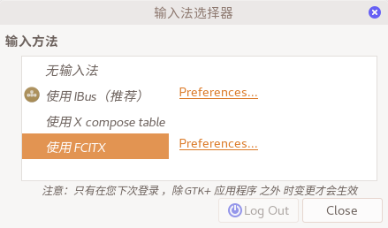

  
    
  


  


  


  

<!DOCTYPE html>
<html lang="zh-cn">
  <head>
    
    <script type="text/javascript"
        async
        src="https://cdn.bootcss.com/mathjax/2.7.3/MathJax.js?config=TeX-AMS-MML_HTMLorMML">
MathJax.Hub.Config({
  tex2jax: {
    inlineMath: [['$','$']],
    displayMath: [['$$','$$']],
    processEscapes: true,
    processEnvironments: true,
    skipTags: ['script', 'noscript', 'style', 'textarea', 'pre'],
    TeX: { equationNumbers: { autoNumber: "AMS" },
         extensions: ["AMSmath.js", "AMSsymbols.js"] }
  }
});

MathJax.Hub.Queue(function() {
    
    
    
    var all = MathJax.Hub.getAllJax(), i;
    for(i = 0; i < all.length; i += 1) {
        all[i].SourceElement().parentNode.className += ' has-jax';
    }
});
</script>

<style>
code.has-jax {
    font: inherit;
    font-size: 100%;
    background: inherit;
    border: inherit;
    color: #515151;
}
</style>
    <meta charset="UTF-8">
    <meta name="viewport" content="width=device-width, initial-scale=1">
    <meta name="generator" content="Hugo 0.61.0 with theme Tranquilpeak 0.4.1-BETA">
    <title>Fedora26中安装Google拼音输入法</title>
    <meta name="author" content="Mijian Xu">
    <meta name="keywords" content="">

    <link rel="icon" href="../../../favicon.png">
    

    
    <meta name="description" content="在Fedora25的时候sogou拼音出现了一些不兼容的情况，从而使我转而使用Google拼音。如今操作系统已经换成了Fedora26，这里就记录下安装Google拼音的过程。">
    <meta property="og:description" content="在Fedora25的时候sogou拼音出现了一些不兼容的情况，从而使我转而使用Google拼音。如今操作系统已经换成了Fedora26，这里就记录下安装Google拼音的过程。">
    <meta property="og:type" content="blog">
    <meta property="og:title" content="Fedora26中安装Google拼音输入法">
    <meta property="og:url" content="/2017/10/fedora26%E4%B8%AD%E5%AE%89%E8%A3%85google%E6%8B%BC%E9%9F%B3%E8%BE%93%E5%85%A5%E6%B3%95/">
    <meta property="og:site_name" content="Note to Tech">
    <meta name="twitter:card" content="summary">
    <meta name="twitter:title" content="Note to Tech">
    <meta name="twitter:description" content="在Fedora25的时候sogou拼音出现了一些不兼容的情况，从而使我转而使用Google拼音。如今操作系统已经换成了Fedora26，这里就记录下安装Google拼音的过程。">
    
    

    
    

    
      <meta property="og:image" content="//www.gravatar.com/avatar/3c21a901526ad8ccb4e92dd5c571b204?s=640">
    

    
    
    

    

    
    <link rel="stylesheet" href="https://cdnjs.cloudflare.com/ajax/libs/font-awesome/4.7.0/css/font-awesome.min.css" integrity="sha256-eZrrJcwDc/3uDhsdt61sL2oOBY362qM3lon1gyExkL0=" crossorigin="anonymous" />
    <link rel="stylesheet" href="https://cdnjs.cloudflare.com/ajax/libs/fancybox/2.1.4/jquery.fancybox.min.css" integrity="sha256-vuXZ9LGmmwtjqFX1F+EKin1ThZMub58gKULUyf0qECk=" crossorigin="anonymous" />
    <link rel="stylesheet" href="https://cdnjs.cloudflare.com/ajax/libs/fancybox/2.1.4/helpers/jquery.fancybox-thumbs.min.css" integrity="sha256-SEa4XYAHihTcEP1f5gARTB2K26Uk8PsndQYHQC1f4jU=" crossorigin="anonymous" />
    
    
    <link rel="stylesheet" href="../../../css/style-fpbzgxsy0kgmdvyrj5ykkg6ratccrk3gocmaqn4xpcjywmv5dteilzucro4f.min.css" />
    
    

    
      
    
    
  </head>

  <body>
    <div id="blog">
      <header id="header" data-behavior="5">
  <i id="btn-open-sidebar" class="fa fa-lg fa-bars"></i>
  <div class="header-title">
    <a class="header-title-link" href="../../../">Note to Tech</a>
  </div>
  
    
      <a class="header-right-picture "
         href="../../../#about">
    
    
    
      
        
      
    
    </a>
  
</header>

      <nav id="sidebar" data-behavior="5">
  <div class="sidebar-container">
    
      <div class="sidebar-profile">
        <a href="../../../#about">
          
        </a>
        <h4 class="sidebar-profile-name">Mijian Xu</h4>
        
          <h5 class="sidebar-profile-bio">千里之行始于足下</h5>
        
      </div>
    
    <ul class="sidebar-buttons">
      
  <li class="sidebar-button">
    
      <a class="sidebar-button-link " href="../../../">
    
      <i class="sidebar-button-icon fa fa-lg fa-home"></i>
      
      <span class="sidebar-button-desc">首页</span>
    </a>
  </li>

  <li class="sidebar-button">
    
      <a class="sidebar-button-link " href="../../../categories">
    
      <i class="sidebar-button-icon fa fa-lg fa-bookmark"></i>
      
      <span class="sidebar-button-desc">分类</span>
    </a>
  </li>

  <li class="sidebar-button">
    
      <a class="sidebar-button-link " href="../../../tags">
    
      <i class="sidebar-button-icon fa fa-lg fa-tags"></i>
      
      <span class="sidebar-button-desc">标签</span>
    </a>
  </li>

  <li class="sidebar-button">
    
      <a class="sidebar-button-link " href="../../../archives">
    
      <i class="sidebar-button-icon fa fa-lg fa-archive"></i>
      
      <span class="sidebar-button-desc">归档</span>
    </a>
  </li>

  <li class="sidebar-button">
    
      <a class="sidebar-button-link " href="../../../#about">
    
      <i class="sidebar-button-icon fa fa-lg fa-question"></i>
      
      <span class="sidebar-button-desc">关于</span>
    </a>
  </li>


    </ul>
    <ul class="sidebar-buttons">
      
  <li class="sidebar-button">
    
      <a class="sidebar-button-link " href="https://github.com/xumi1993" target="_blank" rel="noopener">
    
      <i class="sidebar-button-icon fa fa-lg fa-github"></i>
      
      <span class="sidebar-button-desc">GitHub</span>
    </a>
  </li>


    </ul>
    <ul class="sidebar-buttons">
      
  <li class="sidebar-button">
    
      <a class="sidebar-button-link " href="../../../index.xml">
    
      <i class="sidebar-button-icon fa fa-lg fa-rss"></i>
      
      <span class="sidebar-button-desc">RSS</span>
    </a>
  </li>


    </ul>
  </div>
</nav>

      

      <div id="main" data-behavior="5"
        class="
               hasCoverMetaIn
               ">
        <article class="post" itemscope itemType="http://schema.org/BlogPosting">
          
          
            <div class="post-header main-content-wrap text-left">
  
    <h1 class="post-title" itemprop="headline">
      Fedora26中安装Google拼音输入法
    </h1>
  
  
  <div class="postShorten-meta post-meta">
    
      <time itemprop="datePublished" datetime="2017-10-27T12:26:29&#43;08:00">
        
  十月 27, 2017

      </time>
    
    
  
  
    <span>发布在</span>
    
      <a class="category-link" href="../../../categories/linux">Linux</a>
    
  


  </div>

</div>
          
          <div class="post-content markdown" itemprop="articleBody">
            <div class="main-content-wrap">
              <p>在Fedora25的时候sogou拼音出现了一些不兼容的情况，从而使我转而使用Google拼音。如今操作系统已经换成了Fedora26，这里就记录下安装Google拼音的过程。</p>
<h2 id="heading">输入法和输入源</h2>
<p>在Linux系统中，常用的输入源有ibus和fcitx两种，输入法又会被安装在输入源中（Google拼音在fcitx里）。这两种输入源也是不可以同时使用的。Fedora26默认的输入源是ibus（大部分Linux都是），这里带有拼音输入法，但是非常难用。所以要安装Google拼音就需要安装fcitx，并且能停用ibus。这里需要安装的主要工具有：\</p>
<ul>
<li>fcitx</li>
<li>Googlepinyin</li>
<li>im-chooser</li>
</ul>
<h2 id="heading-1">安装软件源</h2>
<p><a href="https://repo.fdzh.org/">FZUG</a>是fedora的中文源，其中提供了Google拼音，详细信息如下</p>
<pre><code>名称         : fcitx-googlepinyin
版本         : 0.1.6
发布         : 3.git6536e18.fc26
架构         : x86_64
大小         : 133 k
Source       : fcitx-googlepinyin-0.1.6-3.git6536e18.fc26.src.rpm
仓库         : @System
来自仓库     : fzug-free
小结         : Googlepinyin module for fcitx
URL          : https://fcitx-im.org/wiki/Googlepinyin
协议         : GPLv3
描述         : fcitx-googlepinyin is a Googlepinyin module for fcitx.

</code></pre><p>所以先使用如下命令安装FZUG源</p>
<pre><code>dnf install https://repo.fdzh.org/FZUG/free/26/x86_64/fzug-release-26-0.2.noarch.rpm
</code></pre><h2 id="google">安装Google拼音</h2>
<p>直接用<code>dnf</code>安装会同时安装Google拼音的依赖，比如fcitx。但是装好之后会发现没办法在fcitx和ibus直接切换，所以还需要安装im-chooser。</p>
<pre><code>sudo dnf install fcitx-googlepinyin im-chooser
</code></pre><h2 id="heading-2">切换输入源</h2>
<p>im-chooser的功能是切换系统的输入源，这时我们要停用ibus，启用fcitx，在终端输入：</p>
<pre><code>im-chooser
</code></pre><p>出现输入法选择器窗口，选择fcitx，<strong>注销后即可生效</strong>
</p>
              
            </div>
          </div>
          <div id="post-footer" class="post-footer main-content-wrap">
            
              
                
                
                  <div class="post-footer-tags">
                    <span class="text-color-light text-small">标签</span><br/>
                    
  <a class="tag tag--primary tag--small" href="https://blog.xumijian.me/tags/tools/">Tools</a>

  <a class="tag tag--primary tag--small" href="https://blog.xumijian.me/tags/fedora/">Fedora</a>

  <a class="tag tag--primary tag--small" href="https://blog.xumijian.me/tags/linux/">Linux</a>

                  </div>
                
              
            
            
  <div class="post-actions-wrap">
      <nav >
        <ul class="post-actions post-action-nav">
            <li class="post-action">
              
                <a class="post-action-btn btn btn--default tooltip--top" href="../../../2017/10/%E9%85%8D%E7%BD%AEvim%E5%BC%80%E5%8F%91%E7%8E%AF%E5%A2%83/" data-tooltip="配置Vim开发环境">
              
                <i class="fa fa-angle-left"></i>
                <span class="hide-xs hide-sm text-small icon-ml">下一篇</span>
              </a>
            </li>
            <li class="post-action">
              
                <a class="post-action-btn btn btn--default tooltip--top" href="../../../2017/10/ssh-%E9%9A%A7%E9%81%93%E4%B8%8E%E7%AB%AF%E5%8F%A3%E8%BD%AC%E5%8F%91/" data-tooltip="SSH 隧道与端口转发">
              
                <span class="hide-xs hide-sm text-small icon-mr">上一篇</span>
                <i class="fa fa-angle-right"></i>
              </a>
            </li>
        </ul>
      </nav>
    <ul class="post-actions post-action-share" >
      
        <li class="post-action hide-lg hide-md hide-sm">
          <a class="post-action-btn btn btn--default btn-open-shareoptions" href="#btn-open-shareoptions">
            <i class="fa fa-share-alt"></i>
          </a>
        </li>
        
      
      
      <li class="post-action">
        
          <a class="post-action-btn btn btn--default" href="#">
        
          <i class="fa fa-list"></i>
        </a>
      </li>
    </ul>
  </div>


            <div id="gitalk-container"></div>
            <link rel="stylesheet" href="https://cdn.jsdelivr.net/npm/gitalk@1/dist/gitalk.css">
            <script src="https://cdn.jsdelivr.net/npm/gitalk@1/dist/gitalk.min.js"></script>
            <script type="text/javascript">
                  var gitalk = new Gitalk({
                    id: '2017-10-27 12:26:29 \x2b0800 \x2b0800',
                    title: 'Fedora26中安装Google拼音输入法',
                    clientID: '3a3b190b1de92a4f6922',
                    clientSecret: '19f7856d5352fd8ae126ac92a43ac7897fb9a4e3',
                    repo: 'blog.post',
                    owner: 'xumi1993',
                    admin: ['xumi1993'],
                    body: decodeURI(location.href),
                  });
                  gitalk.render('gitalk-container');
            </script>
            
          </div>
        </article>
        <footer id="footer" class="main-content-wrap">
  <span class="copyrights">
    &copy; 2020 Mijian Xu. All Rights Reserved
  </span>
</footer>

      </div>
      <div id="bottom-bar" class="post-bottom-bar" data-behavior="5">
        
  <div class="post-actions-wrap">
      <nav >
        <ul class="post-actions post-action-nav">
            <li class="post-action">
              
                <a class="post-action-btn btn btn--default tooltip--top" href="../../../2017/10/%E9%85%8D%E7%BD%AEvim%E5%BC%80%E5%8F%91%E7%8E%AF%E5%A2%83/" data-tooltip="配置Vim开发环境">
              
                <i class="fa fa-angle-left"></i>
                <span class="hide-xs hide-sm text-small icon-ml">下一篇</span>
              </a>
            </li>
            <li class="post-action">
              
                <a class="post-action-btn btn btn--default tooltip--top" href="../../../2017/10/ssh-%E9%9A%A7%E9%81%93%E4%B8%8E%E7%AB%AF%E5%8F%A3%E8%BD%AC%E5%8F%91/" data-tooltip="SSH 隧道与端口转发">
              
                <span class="hide-xs hide-sm text-small icon-mr">上一篇</span>
                <i class="fa fa-angle-right"></i>
              </a>
            </li>
        </ul>
      </nav>
    <ul class="post-actions post-action-share" >
      
        <li class="post-action hide-lg hide-md hide-sm">
          <a class="post-action-btn btn btn--default btn-open-shareoptions" href="#btn-open-shareoptions">
            <i class="fa fa-share-alt"></i>
          </a>
        </li>
        
      
      
      <li class="post-action">
        
          <a class="post-action-btn btn btn--default" href="#">
        
          <i class="fa fa-list"></i>
        </a>
      </li>
    </ul>
  </div>


      </div>
      <div id="share-options-bar" class="share-options-bar" data-behavior="5">
  <i id="btn-close-shareoptions" class="fa fa-close"></i>
  <ul class="share-options">
    
  </ul>
</div>
<div id="share-options-mask" class="share-options-mask"></div>
      
    </div>
    
    <div id="about">
  <div id="about-card">
    <div id="about-btn-close">
      <i class="fa fa-remove"></i>
    </div>
    
      
    
    <h4 id="about-card-name">Mijian Xu</h4>
    
      <div id="about-card-bio">千里之行始于足下</div>
    
    
      <div id="about-card-job">
        <i class="fa fa-briefcase"></i>
        <br/>
        Ph.D in Seismology, Nanjing University
      </div>
    
    
      <div id="about-card-location">
        <i class="fa fa-map-marker"></i>
        <br/>
        China
Nanjing
      </div>
    
  </div>
</div>

    <div id="algolia-search-modal" class="modal-container">
  <div class="modal">
    <div class="modal-header">
      <span class="close-button"><i class="fa fa-close"></i></span>
      <a href="https://algolia.com" target="_blank" rel="noopener" class="searchby-algolia text-color-light link-unstyled">
        <span class="searchby-algolia-text text-color-light text-small">by</span>
        
      </a>
      <i class="search-icon fa fa-search"></i>
      <form id="algolia-search-form">
        <input type="text" id="algolia-search-input" name="search"
          class="form-control input--large search-input" placeholder="搜索" />
      </form>
    </div>
    <div class="modal-body">
      <div class="no-result text-color-light text-center"></div>
      <div class="results">
        
        
          <div class="media">
            
            <div class="media-body">
              <a class="link-unstyled" href="https://blog.xumijian.me/post/">
                <h3 class="media-heading">Posts</h3>
              </a>
              <span class="media-meta">
                <span class="media-date text-small">
                  Jan 1, 2020
                </span>
              </span>
              <div class="media-content hide-xs font-merryweather"></div>
            </div>
            <div style="clear:both;"></div>
            <hr>
          </div>
        
          <div class="media">
            
            <div class="media-body">
              <a class="link-unstyled" href="https://blog.xumijian.me/2020/01/%E4%B8%89%E7%BB%B4%E6%95%B0%E6%8D%AE%E4%BD%93%E7%94%9F%E6%88%90%E4%B8%8E%E5%88%87%E7%89%87/">
                <h3 class="media-heading">三维数据体生成与切片</h3>
              </a>
              <span class="media-meta">
                <span class="media-date text-small">
                  Jan 1, 2020
                </span>
              </span>
              <div class="media-content hide-xs font-merryweather"><p>我们在计算得到的数据通常是非等间隔网格，为了用GMT进行2D可视化，需要将数据网格化后进行差值。</p></div>
            </div>
            <div style="clear:both;"></div>
            <hr>
          </div>
        
          <div class="media">
            
            <div class="media-body">
              <a class="link-unstyled" href="https://blog.xumijian.me/2019/10/%E5%88%A4%E6%96%AD%E5%9C%B0%E7%90%86%E5%9D%90%E6%A0%87%E7%82%B9%E6%98%AF%E5%90%A6%E5%9C%A8%E5%A4%9A%E8%BE%B9%E5%BD%A2%E5%86%85%E7%9A%84python%E5%AE%9E%E7%8E%B0/">
                <h3 class="media-heading">判断地理坐标点是否在多边形内的Python实现</h3>
              </a>
              <span class="media-meta">
                <span class="media-date text-small">
                  Oct 10, 2019
                </span>
              </span>
              <div class="media-content hide-xs font-merryweather"></div>
            </div>
            <div style="clear:both;"></div>
            <hr>
          </div>
        
          <div class="media">
            
            <div class="media-body">
              <a class="link-unstyled" href="https://blog.xumijian.me/2019/06/%E5%9C%A8vscode%E4%B8%AD%E4%BD%BF%E7%94%A8remote-ssh%E8%BF%9B%E8%A1%8C%E8%BF%9C%E7%A8%8B%E5%BC%80%E5%8F%91/">
                <h3 class="media-heading">在VSCode中使用Remote-SSH进行远程开发</h3>
              </a>
              <span class="media-meta">
                <span class="media-date text-small">
                  Jun 6, 2019
                </span>
              </span>
              <div class="media-content hide-xs font-merryweather"><p>
动图来自<a href="https://microsoft.github.io/vscode-remote-release/images/ssh-readme.gif">官网</a></p></div>
            </div>
            <div style="clear:both;"></div>
            <hr>
          </div>
        
          <div class="media">
            
            <div class="media-body">
              <a class="link-unstyled" href="https://blog.xumijian.me/2019/03/%E7%94%A8fuse%E5%92%8Cntfs-3g%E5%9C%A8macos%E4%B8%8B%E6%89%93%E9%80%A0%E5%85%8D%E8%B4%B9%E7%9A%84ntfs%E8%A7%A3%E5%86%B3%E6%96%B9%E6%A1%88/">
                <h3 class="media-heading">用FUSE和ntfs-3g在MacOS下打造免费的NTFS解决方案</h3>
              </a>
              <span class="media-meta">
                <span class="media-date text-small">
                  Mar 3, 2019
                </span>
              </span>
              <div class="media-content hide-xs font-merryweather"><p><a href="https://www.paragon-software.com/home/ntfs-mac/">Paragon NTFS for Mac</a>和<a href="https://www.tuxera.com/products/tuxera-ntfs-for-mac/">Tuxera</a>是MacOS下常用的NTFS解决方案，但这些软件都是商业软件，而且价格不菲。这些软件除了实现NTFS的读写功能外，还有一些磁盘监测、卸载快捷键等功能，也有很好看的图形界面。但是这些额外功能对我来说都不是必须的，那么有没有一种解决方案可以免费实现最简单的NTFS读写功能呢？</p>
<p>那么这里将介绍通过FUSE和ntfs-3g实现NTFS读写功能</p></div>
            </div>
            <div style="clear:both;"></div>
            <hr>
          </div>
        
          <div class="media">
            
            <div class="media-body">
              <a class="link-unstyled" href="https://blog.xumijian.me/2019/03/%E7%94%A8sshfs%E8%BF%9C%E7%A8%8B%E6%8C%82%E8%BD%BD%E8%B7%AF%E5%BE%84%E5%88%B0%E6%9C%AC%E5%9C%B0/">
                <h3 class="media-heading">用sshfs远程挂载路径到本地</h3>
              </a>
              <span class="media-meta">
                <span class="media-date text-small">
                  Mar 3, 2019
                </span>
              </span>
              <div class="media-content hide-xs font-merryweather"><p><strong>ssh</strong>是常用的远程登陆服务，我们经常使用<strong>scp</strong>、<strong>sftp</strong>等工具与远程服务器进行文件交互。如果是常用的服务器这样工具相对麻烦，如果我们可以像打开本地文件一样打开服务器上的文件就十分方便了。<strong>sshfs可以将远程服务器上的路径作为文件系统挂载到本地。</strong></p></div>
            </div>
            <div style="clear:both;"></div>
            <hr>
          </div>
        
          <div class="media">
            
            <div class="media-body">
              <a class="link-unstyled" href="https://blog.xumijian.me/2019/02/hhkb%E4%BD%BF%E7%94%A8%E5%BF%83%E5%BE%97/">
                <h3 class="media-heading">Hhkb使用心得</h3>
              </a>
              <span class="media-meta">
                <span class="media-date text-small">
                  Feb 2, 2019
                </span>
              </span>
              <div class="media-content hide-xs font-merryweather"><p>
图片来自<a href="http://www.pfu.com.cn/HHKB/">HHKB官网</a></p></div>
            </div>
            <div style="clear:both;"></div>
            <hr>
          </div>
        
          <div class="media">
            
            <div class="media-body">
              <a class="link-unstyled" href="https://blog.xumijian.me/2019/02/%E6%9C%BA%E6%A2%B0%E9%94%AE%E7%9B%98%E8%BD%B4%E4%BD%93%E5%B0%8F%E8%AE%B0%E4%B8%80cherry/">
                <h3 class="media-heading">机械键盘轴体小记（一）：Cherry</h3>
              </a>
              <span class="media-meta">
                <span class="media-date text-small">
                  Feb 2, 2019
                </span>
              </span>
              <div class="media-content hide-xs font-merryweather"><p></p>
<p>Varmilo VA88M 双彩虹RGB，来自<a href="https://www.cherrymx.de/en/blog/VARMILO-VA88M-DOUBLE-RAINBOW-RGB-INTRODUCTION.html">Cherry官方博客</a>。</p></div>
            </div>
            <div style="clear:both;"></div>
            <hr>
          </div>
        
          <div class="media">
            
            <div class="media-body">
              <a class="link-unstyled" href="https://blog.xumijian.me/2019/01/mpipool-mpi4py/">
                <h3 class="media-heading">Mpipool Mpi4py</h3>
              </a>
              <span class="media-meta">
                <span class="media-date text-small">
                  Jan 1, 2019
                </span>
              </span>
              <div class="media-content hide-xs font-merryweather"><p><a href="http://mpi4py.readthedocs.io/en/stable/index.html">mpi4py</a> is a python API for MPI. <strong>MPIPoolExecutor</strong> is a subclass of <code>mpi4py.futures</code> to create MPI processes to execute calls asynchronously</p></div>
            </div>
            <div style="clear:both;"></div>
            <hr>
          </div>
        
          <div class="media">
            
            <div class="media-body">
              <a class="link-unstyled" href="https://blog.xumijian.me/2017/11/vim-%E4%BD%BF%E7%94%A8%E7%AC%94%E8%AE%B0/">
                <h3 class="media-heading">Vim 使用笔记</h3>
              </a>
              <span class="media-meta">
                <span class="media-date text-small">
                  Nov 11, 2017
                </span>
              </span>
              <div class="media-content hide-xs font-merryweather"><h2 id="heading">目录</h2>
<ul>
<li><strong><a href="#command-mode">Command Mode</a></strong>
<ul>
<li><a href="#cursor-motions">Cursor Motions</a></li>
<li><a href="#edit-command">Edit Command</a></li>
<li><a href="#window-motion">Window Motion</a></li>
</ul>
</li>
<li><strong><a href="#insert-mode">Insert Mode</a></strong></li>
<li><strong><a href="#visual-mode">Visual Mode</a></strong></li>
<li><strong><a href="#search-and-replace">Search and Replace</a></strong>
<ul>
<li><a href="#basic-usage">Basic usage</a></li>
<li><a href="#replace">Replace</a></li>
<li><a href="#regular-expression">Regular Expression</a></li>
<li><a href="#vim-%E4%B8%AD%E5%B8%B8%E7%94%A8%E7%9A%84%E6%9B%BF%E6%8D%A2%E8%A1%A8%E8%BE%BE%E5%BC%8F">Vim 中常用的替换表达式</a></li>
</ul>
</li>
<li><strong><a href="#ctags-and-taglist">Ctags and Taglist</a></strong>
<ul>
<li><a href="#ctags-configure">Ctags Configure</a></li>
<li><a href="#pythontag">为Python标准库添加标签</a></li>
<li><a href="#systag">为C/C++系统函数添加标签</a></li>
<li><a href="#taglist-configure">Taglist Configure</a></li>
</ul>
</li>
</ul></div>
            </div>
            <div style="clear:both;"></div>
            <hr>
          </div>
        
      </div>
    </div>
    <div class="modal-footer">
      <p class="results-count text-medium"
         data-message-zero=""
         data-message-one=""
         data-message-other="">
         14 posts found
      </p>
    </div>
  </div>
</div>
    
  
    
    <div id="cover" style="background-image:url('https://blog.xumijian.me/images/nanjing.jpg');"></div>
  


    
<script src="https://cdnjs.cloudflare.com/ajax/libs/jquery/2.1.3/jquery.min.js" integrity="sha256-IFHWFEbU2/+wNycDECKgjIRSirRNIDp2acEB5fvdVRU=" crossorigin="anonymous"></script>
<script src="https://cdnjs.cloudflare.com/ajax/libs/highlight.js/9.8.0/highlight.min.js" integrity="sha256-+mpyNVJsNt4rVXCw0F+pAOiB3YxmHgrbJsx4ecPuUaI=" crossorigin="anonymous"></script>
<script src="https://cdnjs.cloudflare.com/ajax/libs/fancybox/2.1.4/jquery.fancybox.min.js" integrity="sha256-vMxgR/7FtLovVA+IPrR7+xTgIgARH7y9VZQnmmi0HDI=" crossorigin="anonymous"></script>
<script src="https://cdnjs.cloudflare.com/ajax/libs/fancybox/2.1.4/helpers/jquery.fancybox-thumbs.min.js" integrity="sha256-N0qFUh7/9vLvia87dDndewmsgsyYoNkdA212tPc+2NI=" crossorigin="anonymous"></script>


<script src="../../../js/script-qi9wbxp2ya2j6p7wx1i6tgavftewndznf4v0hy2gvivk1rxgc3lm7njqb6bz.min.js"></script>


<script>
$(document).ready(function() {
  hljs.configure({ classPrefix: '', useBR: false });
  $('pre.code-highlight, pre > code').each(function(i, block) {
    if (!$(this).hasClass('codeblock')) {
      $(this).addClass('codeblock');
    }
    hljs.highlightBlock(block);
  });
});
</script>

  
    
  


    
  </body>
</html>


